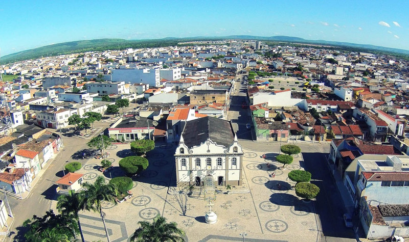

Tobias Barreto
História
Tobias Barreto foi fundado por Belquior Dias Moreira, considerado o colonizador do sertão do rio Real, se instalando em 1599, no século XVI, ele construiu currais para criação de gado, nas proximidades da confluência do rio Jabiberi com o rio Real. Anos depois, apareceu uma imagem de Nossa Senhora em um sítio de aproximadamente 40 tarefas, onde foi formando um vilarejo, no local onde hoje é a sede ou cidade municipal. Na época, os camponeses construíram uma capelinha em sua homenagem e com o passar dos anos, eles começaram a construir suas residências em volta dela, formando inicialmente uma aldeia e batizada de Paraíso, informa o livro “Tobias Barreto, A Terra e a Gente”, do escritor tobiense Aderbal Correia Barbosa.
“Logo depois para a surpresa dos moradores da recém-criada povoação, a imagem desapareceu. Dias depois ela foi encontrada dentro de um matagal nas proximidades da povoação. Os habitantes do povoado conduziram-na de volta à capela, mas pouco tempo depois ela desapareceu outra vez e foi encontrada novamente no mesmo matagal”, diz o livro.
No local os moradores derrubaram a mata e construíram uma nova capelinha, onde hoje fica a igreja matriz Nossa Senhora Imperatriz dos Campos. O novo povoado recebeu o nome Capela de Nossa Senhora dos Campos do rio Traripe, por estar situado às margens desse rio, hoje, chamado de rio Real, e Campos por ser localizado em uma vasta planície. O nome do povoado foi se simplificando e passou a chamar-se Campos do Rio Real e depois apenas Campos.
Belchior Dias Moreira, conhecido como Belchior Dias Caramuru, era parente de Diogo Álvares Caramuru e primeiro habitante de Tobias Barreto. A chegada dele foi depois da conquista de Sergipe, como um dos capitães de Cristóvão de Barros” informa a Enciclopédia dos Municípios Brasileiros.
As terras de Campos, durante muitos anos, pertenceram ao morgado de Belchior. Iam dos limites de Lagarto até o rio Itapicuru, na Capitania da Bahia. Houve divergências entre o arcebispo da Bahia e Garcia d’Ávila Pereira, administrador do morgado, subordinado à esfera política e administrativa de Lagarto.
Em 20 de outubro de 1718 foi criada pelo arcebispo da Bahia, D. Sebastião Monteiro a freguesia de Nossa Senhora Imperatriz dos Campos do Rio Real de Cima, no termo de Lagarto. Em 1757, a freguesia tinha 125 sítios de “pastores e agricultores” e população de 1350 habitantes. A sua extensão era de 20 léguas. No fim do século XVIII, Campos era o maior centro de exportação de couro e sola da Capitania de Sergipe. Em 1808 a freguesia tinha uma população de 2618 habitantes, sendo 1000 brancos, 500 pretos e os demais mestiços. A criação de gado era a principal atividade econômica. “O movimento do comércio de gado na feira já era de 2000 cabeças de animais sendo baixo o rendimento da agricultura”, diz a Enciclopédia. Era tão inexpressiva a agricultura que os habitantes iam comprar farinha em Estância. Atualmente, o movimento do comércio de gado ainda é grande. São vendidas todas as segundas na feira na cidade, de 800 a 1000 cabeças, e por isso, a feira de Tobias Barreto é considerada uma das maiores do Estado.
fonte: https://tobiasbarreto.wordpress.com/2016/08/19/tobias-barreto-historia/comment-page-1/Pontos Turísticos
Serra do Canine
Existe uma serra assombrada e estranha na região dos povoados Agrovila, Jabiberi e Campo Pequeno no município de Tobias Barreto, ela é chamada de Canine. Dizem que ao subir na serra, as pessoas ficam desorientadas, confusas e passam por acontecimentos estranhos e assombrados.
Recanto da Serra
O Recanto da Serra fica localizado no povoado comunidade do jacaré, cerca de 23 km do centro a cidade e possui um verdadeiro encontro com a natureza, lá o turista ou visitante encontra além de trilhas, um museu, uma área de acampamento, a casa reciclada, a ponte do rio que cai e ainda passeia de cavalo e de bicicleta de época.
Dados Gerais de acordo com o IBGE
| Prefeito (a) | Adilson de Jesus Santos |
| Vice-Prefeito (a) | Júlio César Ribeiro Prado |
| Site do município | https://www.tobiasbarreto.se.gov.br/ |
| Área territorial | 1.024,645 km² |
| População estimada | 52.861 pessoas |
| Densidade demográfica | 47,04 hab/km² |
| IDHM | 0,557 |
| PIB per capita | R$ 11.215,73 |